IndieSuite
Three private utilities for receipts, lab history and contract review. This page records the redesigned interface and release preparation.
Pre-release candidate. Production readiness is pending physical-device QA, purchase verification and the App Review evidence. Simulator screens do not substitute for the physical-device recording Apple requested.
Review the current flow
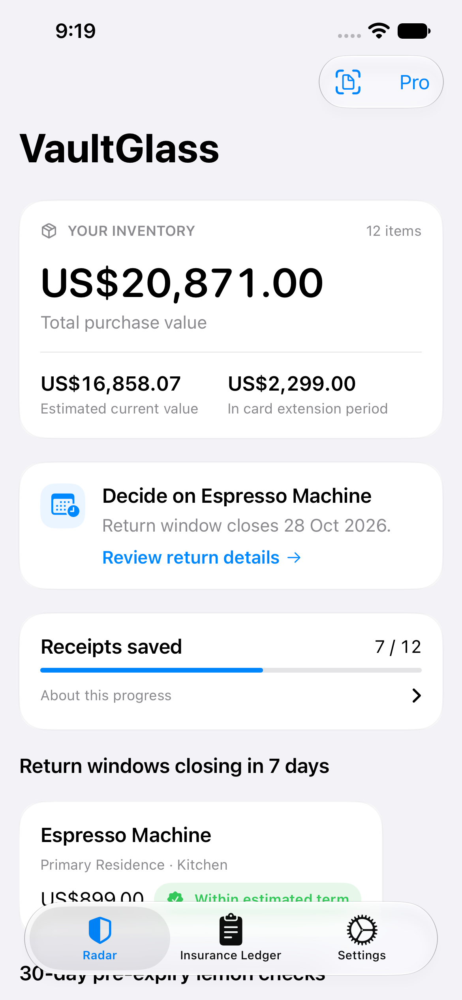
VaultGlass Dashboard RefinedNative iPhone 17e capture · demo data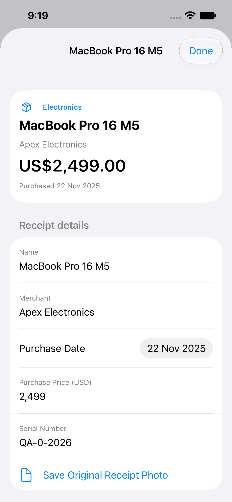
VaultGlass Receipt RefinedNative iPhone 17e capture · demo data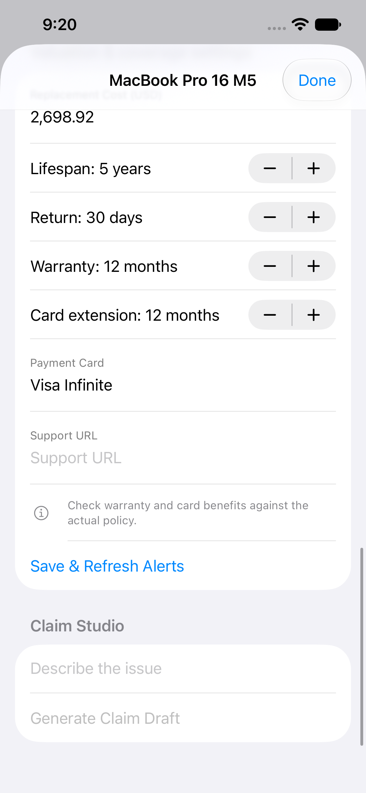
VaultGlass Coverage DetailsNative iPhone 17e capture · demo data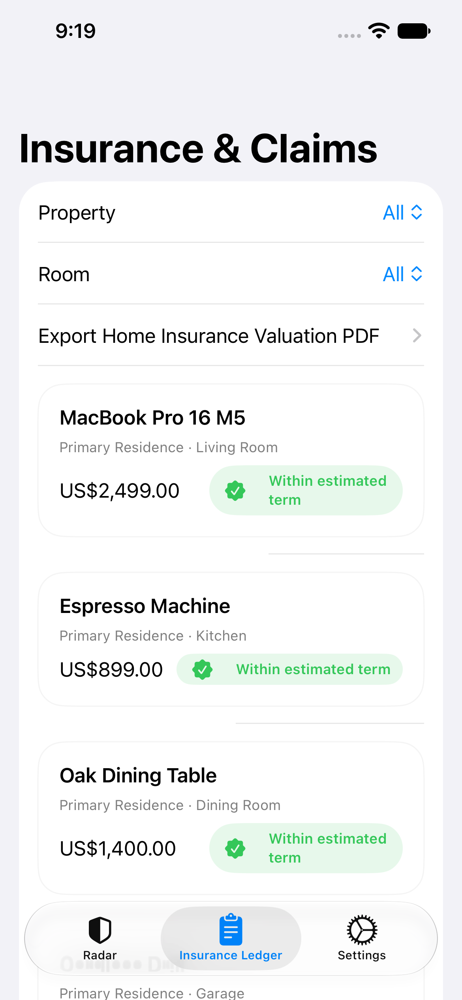
VaultGlass Insurance LedgerNative iPhone 17e capture · demo data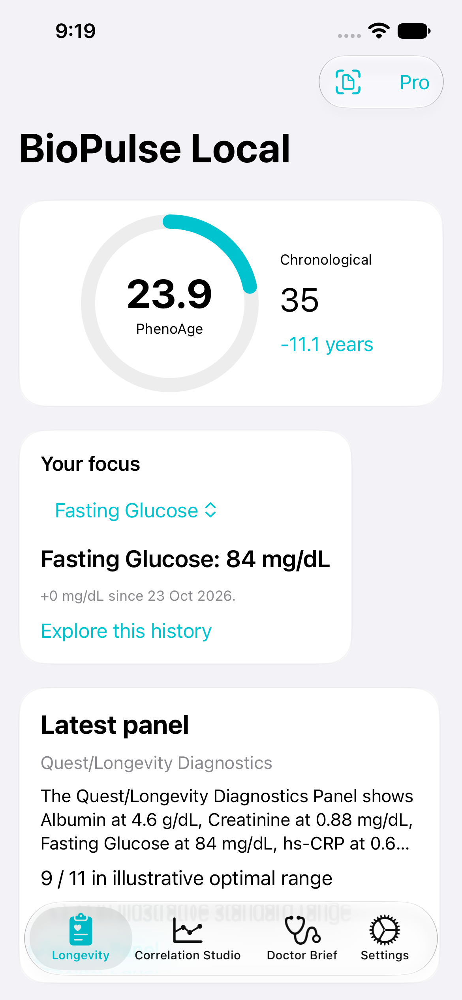
BioPulse Dashboard RefinedNative iPhone 17e capture · demo data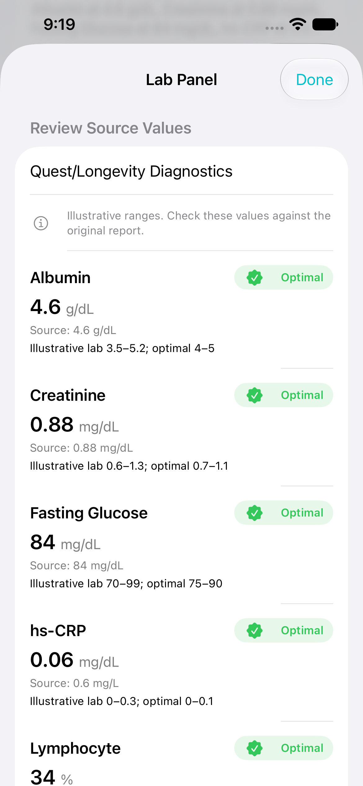
BioPulse Panel RefinedNative iPhone 17e capture · demo data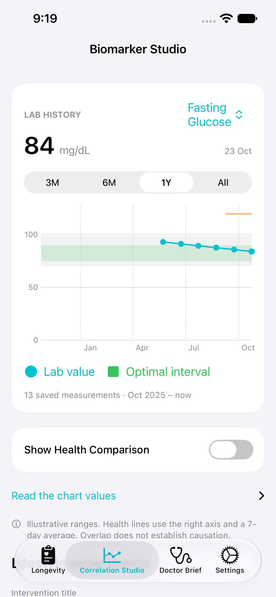
BioPulse Lab ChartNative iPhone 17e capture · demo data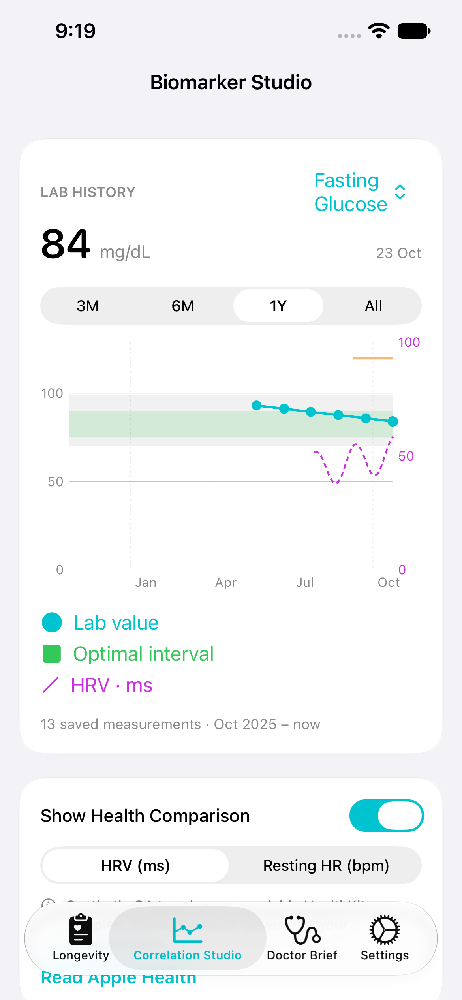
BioPulse Health OverlayNative iPhone 17e capture · demo data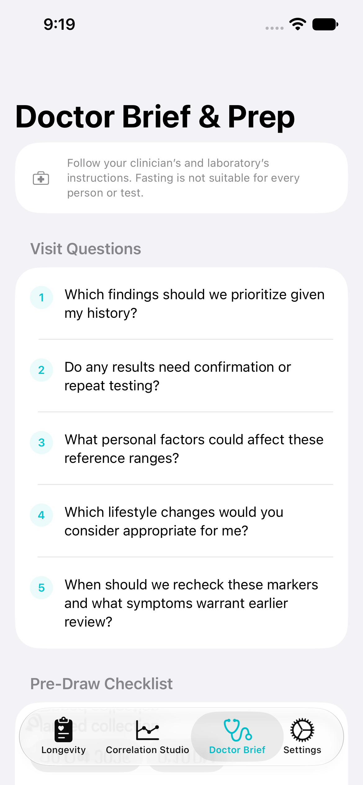
BioPulse Doctor BriefNative iPhone 17e capture · demo data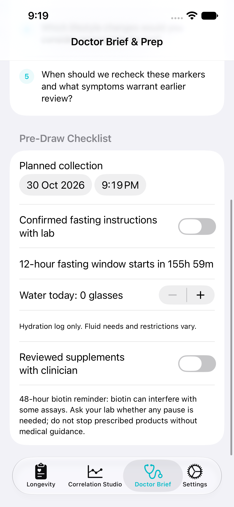
BioPulse Draw PrepNative iPhone 17e capture · demo data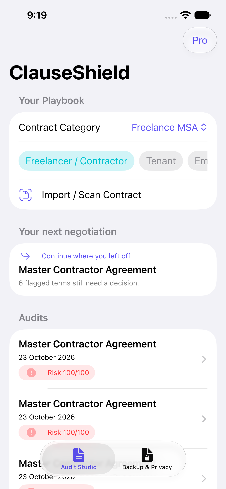
ClauseShield Playbook RefinedNative iPhone 17e capture · demo data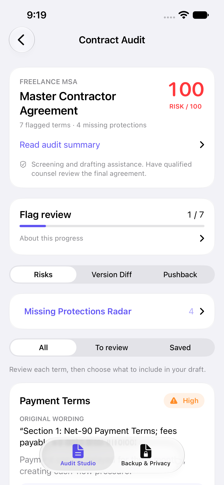
ClauseShield Audit RefinedNative iPhone 17e capture · demo data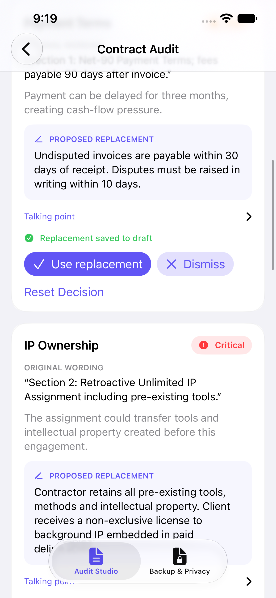
ClauseShield Clause ReviewNative iPhone 17e capture · demo data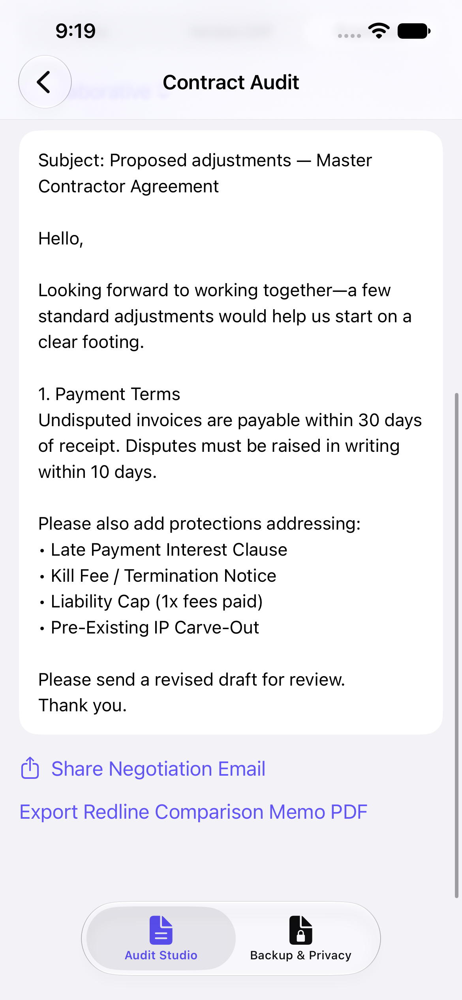
ClauseShield Pushback RefinedNative iPhone 17e capture · demo data